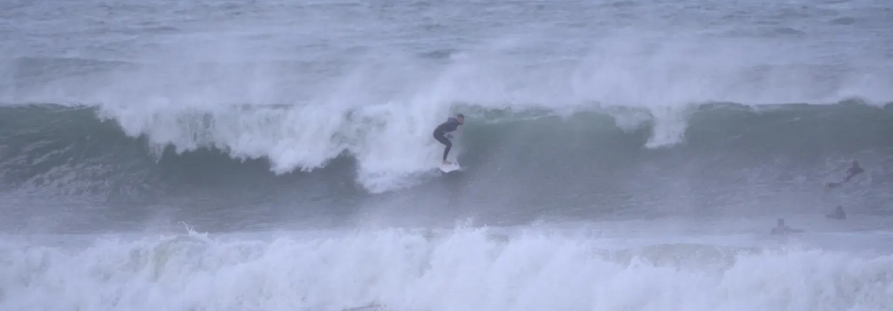
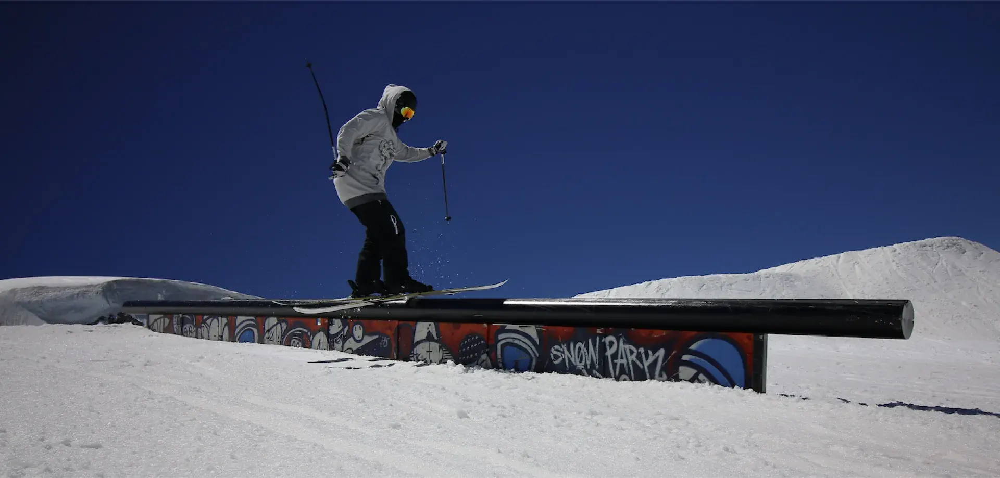
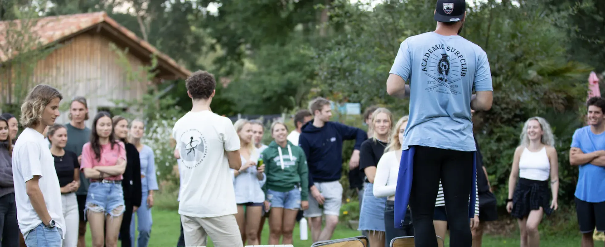

Adrian König is a PhD candidate at the Institute for Private International Law and Civil Procedure (CIVPRO), Faculty of Law, University of Bern, under the supervision of Prof. Dr. Florian Eichel. His doctoral research focuses on data-science-driven litigation and examines how quantitative methods, structured legal data, and empirical analysis can support tactical and strategic decision-making in civil procedure. From September 2026, he will also join CIVPRO as a research associate.
He runs an independent Zurich-based practice for legal research and project support, advising selected B2B clients on matters requiring legal analysis. He also teaches legal subjects as a lecturer for Delta Group AG in Zurich and is currently preparing for the written part of the Zurich bar examination. Previously, he worked as a litigation trainee with an internationally recognised dispute resolution specialist and gained experience at several leading Swiss commercial law firms.
König’s profile is defined by broad academic and practical training across law, business, finance, economics, and technology. He recently completed a Master of Science in Business Administration with a special qualification in Corporate Finance at the University of Bern. He also holds a Master of Law (2024) and a Certificate of Advanced Studies in International Law and Economics (2024). During his studies, he pursued degree programmes in two distinct academic disciplines in parallel, completed an unusually high ECTS workload, and already published articles in recognised Swiss legal journals. His academic work spans legal and interdisciplinary fields, with a particular focus on the intersection of legal doctrine, empirical analysis, and technology.
Beyond legal practice and research, König has built and led several entrepreneurial and organisational projects. He contributes to OpenCaseLaw and selected legaltech initiatives. He founded and formerly presided over the Academic Surf Club Switzerland, now one of Switzerland’s largest student organisations with more than 1,000 members. He also built and ran the Academic Surfcamp, bringing together around 200 participants from major Swiss universities across two weeks per year, and co-founded the first Swiss student surfing championships. An overview of those activities is collected on the Academic Surf Club projects page.
His professional and academic trajectory is complemented by a background in high-performance sport and demanding practical environments. König is a multiple Swiss national champion in Taekwondo and has achieved international placements across Europe (see the full list of honors and awards). He now trains primarily in mixed martial arts, kickboxing, and CrossFit. Earlier experience as a private-client ski instructor in Laax and in private security further shaped his resilience, client orientation, and ability to operate under pressure. In winter, he can often be found on freestyle skis in snowparks, while his trips abroad frequently revolve around surfing.


